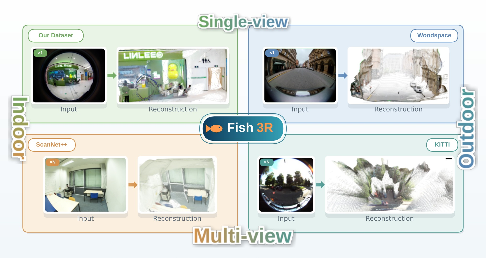
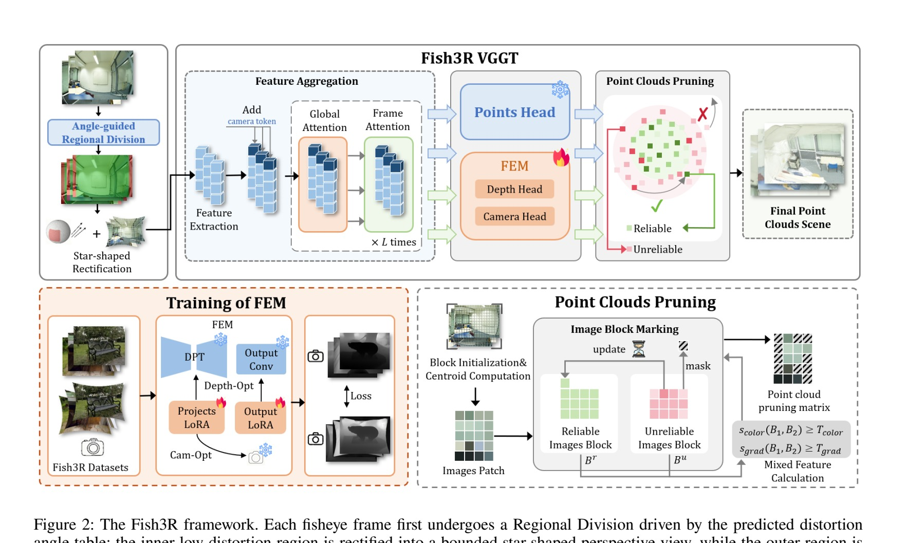
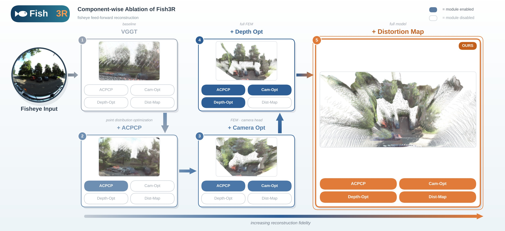

If it looks like this — Fish3R reconstructs it.
Fisheye cameras are the dominant sensor for wide-coverage scene perception, yet their severe nonlinear radial distortion poses a fundamental challenge to existing feed-forward 3D reconstruction methods. Full-frame rectification is inherently flawed: heavily distorted peripheral content cannot be represented on a single perspective canvas, and even recoverable regions suffer degraded geometric fidelity after warping.
We propose Fish3R, a distortion-aware feed-forward reconstruction framework that adopts a divide-and-conquer strategy: it rectifies only the trustworthy low-distortion region and reconstructs the rest via direct inverse mapping. Guided by a predicted per-pixel angle table, Fish3R rectifies the central low-distortion area into a star-shaped perspective view, from which a jointly adapted fisheye model based on VGGT recovers stable multi-view poses and a base point cloud. The high-distortion periphery is then lifted to 3D through the angle table under the recovered poses, and an adaptive confidence pruning module consolidates the fused point cloud.
Experiments on synthetic and real fisheye scenes show that Fish3R outperforms both traditional and learning-based baselines — indoors and outdoors, single-view and multi-view, across the full fisheye field of view.

Distortion is not an obstacle. It is a guide.

Only the central low-distortion region is rectified — into a star-shaped perspective view whose concave arcs trace the exact distortion frontier. No fisheye content is ever forced onto a canvas it cannot fit.
A predicted per-pixel angle table records every ray's angle to the optical axis. The high-distortion periphery — deliberately left out of rectification — is lifted to 3D by direct inverse mapping under the recovered poses.
Lightweight LoRA adapters (Cam-Opt & Depth-Opt) retune the camera and depth heads of a frozen VGGT backbone onto the virtual pinhole canvas — geometry and poses improve jointly, in one consistent objective.
Block-wise color-geometry matching scores every image block; reliable regions survive into the merged cloud while unreliable ones are pruned — consolidating a clean, complete full-FOV reconstruction.
Every module earns its place — reconstruction fidelity grows as components switch on, from the VGGT baseline to the full Fish3R model.
